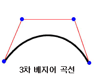

| 패키지 | flash.display |
| 클래스 | public final class Graphics |
| 상속 | Graphics |
| 언어 버전: | ActionScript 3.0 |
| 런타임 버전: | AIR 1.0, Flash Player 9, Flash Lite 4 |
graphics 속성이 있습니다. 편리한 사용을 위해 drawRect(), drawRoundRect(), drawCircle() 및 drawEllipse()와 같은 도우미 함수가 제공됩니다.
ActionScript 코드에서 직접 Graphics 객체를 만들 수 없습니다. new Graphics()를 호출하면 예외가 발생합니다.
Graphics 클래스는 최종 클래스이므로 하위 클래스를 만들 수 없습니다.
 상속되는 공용 속성 숨기기
상속되는 공용 속성 숨기기 상속되는 공용 속성 표시
상속되는 공용 속성 표시| 메서드 | 정의 주체 | ||
|---|---|---|---|
beginBitmapFill(bitmap:BitmapData, matrix:Matrix = null, repeat:Boolean = true, smooth:Boolean = false):void
비트맵 이미지로 드로잉 영역을 채웁니다. | Graphics | ||
드로잉에 다른 Graphics 메서드(예: lineTo() 또는 drawCircle())에 대한 후속 호출을 사용하는 단순한 단색 채우기를 지정합니다. | Graphics | ||
beginGradientFill(type:String, colors:Array, alphas:Array, ratios:Array, matrix:Matrix = null, spreadMethod:String = "pad", interpolationMethod:String = "rgb", focalPointRatio:Number = 0):void
해당 객체에 대해 이후에 lineTo() 또는 drawCircle() 등의 다른 Graphics 메서드를 호출할 때 사용되는 그래디언트 채우기를 지정합니다. | Graphics | ||
해당 객체에 대해 이후에 lineTo() 또는 drawCircle() 등의 다른 Graphics 메서드를 호출할 때 사용되는 셰이더 채우기를 지정합니다. | Graphics | ||
이 Graphics 객체에 그린 그래픽을 지우고 채우기 및 선 스타일을 다시 설정합니다. | Graphics | ||
소스 Graphics 객체의 모든 드로잉 명령을 호출하는 Graphics 객체에 복사합니다. | Graphics | ||
cubicCurveTo(controlX1:Number, controlY1:Number, controlX2:Number, controlY2:Number, anchorX:Number, anchorY:Number):void
현재 드로잉 위치에서 지정된 앵커 포인트까지 3차 베지어 곡선을 그립니다. | Graphics | ||
현재의 선 스타일을 사용하여 현재의 드로잉 위치에서 (anchorX, anchorY) 위치까지 2차 베지어 곡선을 그립니다. 제어점으로는 (controlX, controlY) 위치를 사용합니다. | Graphics | ||
원을 그립니다. | Graphics | ||
타원을 그립니다. | Graphics | ||
드로잉할 일련의 IGraphicsData 인스턴스를 전송합니다. | Graphics | ||
드로잉을 위한 일련의 명령을 전송합니다. | Graphics | ||
사각형을 그립니다. | Graphics | ||
drawRoundRect(x:Number, y:Number, width:Number, height:Number, ellipseWidth:Number, ellipseHeight:Number = NaN):void
모서리가 둥근 직사각형을 그립니다. | Graphics | ||
drawTriangles(vertices:Vector.<Number>, indices:Vector.<int> = null, uvtData:Vector.<Number> = null, culling:String = "none"):void
일반적으로 비트맵을 왜곡하여 3차원 느낌을 주는 삼각형 집합을 렌더링합니다. | Graphics | ||
beginFill(), beginGradientFill() 또는 beginBitmapFill() 메서드에 대한 마지막 호출 이후로 추가된 선과 곡선에 채우기를 적용합니다. | Graphics | ||
 |
지정된 속성이 객체에 정의되어 있는지 여부를 나타냅니다. | Object | |
|
Object 클래스의 인스턴스가 매개 변수로 지정된 객체의 프로토타입 체인에 있는지 여부를 나타냅니다. | Object | |
lineBitmapStyle(bitmap:BitmapData, matrix:Matrix = null, repeat:Boolean = true, smooth:Boolean = false):void
선을 그릴 때 선의 획에 사용할 비트맵을 지정합니다. | Graphics | ||
lineGradientStyle(type:String, colors:Array, alphas:Array, ratios:Array, matrix:Matrix = null, spreadMethod:String = "pad", interpolationMethod:String = "rgb", focalPointRatio:Number = 0):void
선을 그릴 때 획에 사용할 그래디언트를 지정합니다. | Graphics | ||
선을 그릴 때 선의 획에 사용할 셰이더를 지정합니다. | Graphics | ||
lineStyle(thickness:Number = NaN, color:uint = 0, alpha:Number = 1.0, pixelHinting:Boolean = false, scaleMode:String = "normal", caps:String = null, joints:String = null, miterLimit:Number = 3):void
이후에 lineTo() 메서드 또는 drawCircle() 메서드 등의 Graphics 메서드를 호출할 때 사용되는 선 스타일을 지정합니다. | Graphics | ||
현재 선 스타일을 사용하여 현재 드로잉 위치에서 (x, y)로 선을 그립니다. 그러면 현재 드로잉 위치가 (x, y)로 설정됩니다. | Graphics | ||
현재 드로잉 위치를 (x, y)로 이동합니다. | Graphics | ||
|
지정된 속성이 존재하고 열거 가능한지 여부를 나타냅니다. | Object | |
Sprite 또는 Shape 객체(및 필요할 경우 그 자식)에 벡터 그래픽 내용에 대한 쿼리를 보냅니다. | Graphics | ||
|
루프 작업에서 동적 속성을 사용할 수 있는지 여부를 설정합니다. | Object | |
|
로캘별 규칙에 따라 서식이 지정된 이 객체의 문자열 표현을 반환합니다. | Object | |
|
지정된 객체의 문자열 표현을 반환합니다. | Object | |
|
지정된 객체의 프리미티브 값을 반환합니다. | Object | |
beginBitmapFill | () | 메서드 |
public function beginBitmapFill(bitmap:BitmapData, matrix:Matrix = null, repeat:Boolean = true, smooth:Boolean = false):void| 언어 버전: | ActionScript 3.0 |
| 런타임 버전: | AIR 1.0, Flash Player 9, Flash Lite 4 |
비트맵 이미지로 드로잉 영역을 채웁니다. 비트맵을 반복하거나 바둑판식으로 배열하여 영역을 채울 수 있습니다. 채우기의 효과는 beginFill(), beginBitmapFill(), beginGradientFill() 또는 beginShaderFill() 메서드를 호출할 때까지 유지됩니다. clear() 메서드를 호출하면 채우기가 지워집니다.
이 응용 프로그램은 세 개 이상의 점이 그려질 때마다 또는 endFill() 메서드가 호출될 때 채우기를 렌더링합니다.
매개 변수
bitmap:BitmapData — 표시할 비트를 포함하는 투명 또는 불투명 비트맵 이미지입니다.
| |
matrix:Matrix (default = null)
matrix = new flash.geom.Matrix();
matrix.rotate(Math.PI / 4);
| |
repeat:Boolean (default = true)true이면 비트맵 이미지가 반복되어 바둑판식 패턴을 이루고, 값이 false이면 비트맵 이미지가 반복되지 않고 해당 비트맵을 넘는 채우기 영역에 비트맵의 가장자리가 사용됩니다.
예를 들어 다음과 같은 20 x 20픽셀의 바둑판 모양 비트맵을 생각해 볼 수 있습니다.
다음 예제와 같이
| |
smooth:Boolean (default = false)false이면 확대된 비트맵 이미지가 최단입점 알고리즘을 사용하여 렌더링되며 픽셀화되어 나타납니다. true이면 확대된 비트맵 이미지가 쌍선형 알고리즘을 사용하여 렌더링됩니다. 최단입점 알고리즘을 사용한 렌더링이 더 빠릅니다.
|


관련 API 요소
예제 ( 예제 사용 방법 )
image1.jpg)를 사용합니다.
- 이미지 파일(
image1.jpg)은Loader및URLRequest객체를 사용하여 로드됩니다. 여기에서는 이미지 파일이 SWF 파일과 동일한 디렉토리에 있습니다. SWF 파일은 [로컬 재생 보안]이 [로컬 파일에만 액세스]로 설정된 상태에서 컴파일해야 합니다. - 이미지가 로드되면(
Event가 완료됨)drawImage()메서드가 호출됩니다.ioErrorHandler()메서드는 이미지가 제대로 로드되지 않은 경우 추적 주석을 기록합니다. drawImage()메서드에서BitmapData객체가 인스턴스화되고 폭과 높이가 이미지(image1.jpg)로 설정됩니다. 그런 다음 BitmapData 객체에 소스 이미지가 그려집니다. 이어서mySpriteSprite 객체에서 사각형이 그려지고 BitmapData 객체를 사용해서 사각형을 채웁니다.Matrix객체를 사용해서beginBitmapFill()메서드가 이미지를 45도 회전시킨 다음 완료될 때까지 사각형을 이미지로 채웁니다.
package {
import flash.display.Sprite;
import flash.display.BitmapData;
import flash.display.Loader;
import flash.net.URLRequest;
import flash.events.Event;
import flash.events.IOErrorEvent;
import flash.geom.Matrix;
public class Graphics_beginBitmapFillExample extends Sprite {
private var url:String = "image1.jpg";
private var loader:Loader = new Loader();
public function Graphics_beginBitmapFillExample() {
var request:URLRequest = new URLRequest(url);
loader.load(request);
loader.contentLoaderInfo.addEventListener(Event.COMPLETE, drawImage);
loader.contentLoaderInfo.addEventListener(IOErrorEvent.IO_ERROR, ioErrorHandler);
}
private function drawImage(event:Event):void {
var mySprite:Sprite = new Sprite();
var myBitmap:BitmapData = new BitmapData(loader.width, loader.height, false);
myBitmap.draw(loader, new Matrix());
var matrix:Matrix = new Matrix();
matrix.rotate(Math.PI/4);
mySprite.graphics.beginBitmapFill(myBitmap, matrix, true);
mySprite.graphics.drawRect(100, 50, 200, 90);
mySprite.graphics.endFill();
addChild(mySprite);
}
private function ioErrorHandler(event:IOErrorEvent):void {
trace("Unable to load image: " + url);
}
}
}
beginFill | () | 메서드 |
public function beginFill(color:uint, alpha:Number = 1.0):void| 언어 버전: | ActionScript 3.0 |
| 런타임 버전: | AIR 1.0, Flash Player 9, Flash Lite 4 |
드로잉에 다른 Graphics 메서드(예: lineTo() 또는 drawCircle())에 대한 후속 호출을 사용하는 단순한 단색 채우기를 지정합니다. 채우기의 효과는 beginFill(), beginBitmapFill(), beginGradientFill() 또는 beginShaderFill() 메서드를 호출할 때까지 유지됩니다. clear() 메서드를 호출하면 채우기가 지워집니다.
이 응용 프로그램은 세 개 이상의 점이 그려질 때마다 또는 endFill() 메서드가 호출될 때 채우기를 렌더링합니다.
매개 변수
color:uint — 채우기 색상(0xRRGGBB)입니다.
| |
alpha:Number (default = 1.0) |
관련 API 요소
예제
예제 사용 방법
이 메서드를 사용하는 방법은 이 클래스 뒷부분의 예제를 참조하십시오.
beginGradientFill | () | 메서드 |
public function beginGradientFill(type:String, colors:Array, alphas:Array, ratios:Array, matrix:Matrix = null, spreadMethod:String = "pad", interpolationMethod:String = "rgb", focalPointRatio:Number = 0):void| 언어 버전: | ActionScript 3.0 |
| 런타임 버전: | AIR 1.0, Flash Player 9, Flash Lite 4 |
해당 객체에 대해 이후에 lineTo() 또는 drawCircle() 등의 다른 Graphics 메서드를 호출할 때 사용되는 그래디언트 채우기를 지정합니다. 채우기의 효과는 beginFill(), beginBitmapFill(), beginGradientFill() 또는 beginShaderFill() 메서드를 호출할 때까지 유지됩니다. clear() 메서드를 호출하면 채우기가 지워집니다.
이 응용 프로그램은 세 개 이상의 점이 그려질 때마다 또는 endFill() 메서드가 호출될 때 채우기를 렌더링합니다.
매개 변수
type:String — 사용할 그래디언트 유형, 즉 GradientType.LINEAR 또는 GradientType.RADIAL을 지정하는 GradientType 클래스 값입니다.
| |||||||||
colors:Array — 그래디언트에 사용되는 RGB 16진수 색상 값(예: 빨강은 0xFF0000, 파랑은 0x0000FF 등)의 배열입니다. 최대 15가지 색상을 지정할 수 있습니다. 색상별로 알파 및 비율 매개 변수에 해당 값을 지정해야 합니다.
| |||||||||
alphas:Array — 색상 배열에 속한 색상의 알파 값 배열이며 유효한 값은 0부터 1까지입니다. 값이 0보다 작으면 기본값은 0입니다. 값이 1보다 큰 경우 기본값은 1입니다.
| |||||||||
ratios:Array — 색상 배분 비율의 배열이며 유효한 값은 0-255입니다. 이 값은 색상이 100%로 샘플링되는 위치의 폭에 대한 백분율을 정의합니다. 값 0은 그래디언트 상자의 왼쪽 위치를, 255는 그래디언트 상자의 오른쪽 위치를 나타냅니다.
참고: 이 값은 최종 그래디언트의 좌표 공간이 아니라 그래디언트 상자에서의 위치를 나타내며, 그래디언트 상자보다 넓거나 좁을 수 있습니다. 예를 들어 파랑 및 녹색의 두 가지 색상이 포함된 선형 그래디언트의 경우, 다음 예제에서는
배열의 값은 | |||||||||
matrix:Matrix (default = null)createGradientBox() 메서드를 사용하면 beginGradientFill() 메서드와 함께 사용할 행렬을 편리하게 설정할 수 있습니다.
| |||||||||
spreadMethod:String (default = "pad")SpreadMethod.PAD, SpreadMethod.REFLECT 또는 SpreadMethod.REPEAT를 지정하는 SpreadMethod 클래스 값입니다.
예를 들어 다음과 같이 두 색상 간의 간단한 선형 그래디언트를 생각해 볼 수 있습니다.
import flash.geom.*
import flash.display.*
var fillType:String = GradientType.LINEAR;
var colors:Array = [0xFF0000, 0x0000FF];
var alphas:Array = [1, 1];
var ratios:Array = [0x00, 0xFF];
var matr:Matrix = new Matrix();
matr.createGradientBox(20, 20, 0, 0, 0);
var spreadMethod:String = SpreadMethod.PAD;
this.graphics.beginGradientFill(fillType, colors, alphas, ratios, matr, spreadMethod);
this.graphics.drawRect(0,0,100,100);
이 예제에서는 스프레드 방식으로
스프레드 방식으로
스프레드 방식으로
| |||||||||
interpolationMethod:String (default = "rgb")InterpolationMethod.LINEAR_RGB 또는 InterpolationMethod.RGB를 지정하는 InterpolationMethod 클래스 값입니다.
예를 들어 두 색상 간의 간단한 선형 그래디언트를 생각해 볼 수 있습니다(
| |||||||||
focalPointRatio:Number (default = 0)focalPointRatio의 예를 보여 줍니다.
|


오류
ArgumentError — type 매개 변수가 유효하지 않은 경우입니다.
|
관련 API 요소
beginShaderFill | () | 메서드 |
public function beginShaderFill(shader:Shader, matrix:Matrix = null):void| 언어 버전: | ActionScript 3.0 |
| 런타임 버전: | Flash Player 10, AIR 1.5 |
해당 객체에 대해 이후에 lineTo() 또는 drawCircle() 등의 다른 Graphics 메서드를 호출할 때 사용되는 셰이더 채우기를 지정합니다. 채우기의 효과는 beginFill(), beginBitmapFill(), beginGradientFill() 또는 beginShaderFill() 메서드를 호출할 때까지 유지됩니다. clear() 메서드를 호출하면 채우기가 지워집니다.
이 응용 프로그램은 세 개 이상의 점이 그려질 때마다 또는 endFill() 메서드가 호출될 때 채우기를 렌더링합니다.
셰이더 채우기는 GPU 렌더링에서 지원되지 않습니다. 채워진 영역은 청록색이 됩니다.
매개 변수
shader:Shader — 채우기에 사용할 셰이더입니다. 이 Shader 인스턴스는 이미지 입력을 지정하는 데 필요하지 않습니다. 그러나 셰이더에 이미지 입력이 지정된 경우에는 입력을 직접 제공해야 합니다. 입력을 지정하려면 Shader.data 속성에 들어 있는 해당 ShaderInput 속성의 input 속성을 설정해야 합니다.
Shader 인스턴스를 인수로 전달하면 해당 셰이더가 내부적으로 복사됩니다. 드로잉 채우기 작업은 원본 셰이더에 대한 참조가 아닌 이 내부 사본을 사용합니다. 매개 변수 값, 입력 또는 바이트 코드 변경과 같이 셰이더의 모든 변경 사항은 채우기에 사용되는 셰이더 사본에는 적용되지 않습니다. | |
matrix:Matrix (default = null)
matrix = new flash.geom.Matrix();
matrix.rotate(Math.PI / 4);
셰이더에 수신된 좌표는 |
오류
ArgumentError — 셰이더 출력 유형이 이 작업과 호환되지 않을 때(셰이더가 pixel3 또는 pixel4 출력을 지정해야 함)
| |
ArgumentError — 셰이더가 제공되지 않은 이미지 입력을 지정한 경우
| |
ArgumentError — ByteArray 또는 Vector.<Number> 인스턴스가 입력으로 사용되고 width 및 height 속성이 ShaderInput에 대해 지정되지 않았거나 지정된 값이 입력 객체의 데이터 양과 일치하지 않는 경우. 자세한 내용은 ShaderInput.input 속성을 참조하십시오.
|
관련 API 요소
clear | () | 메서드 |
public function clear():void| 언어 버전: | ActionScript 3.0 |
| 런타임 버전: | AIR 1.0, Flash Player 9, Flash Lite 4 |
이 Graphics 객체에 그린 그래픽을 지우고 채우기 및 선 스타일을 다시 설정합니다.
copyFrom | () | 메서드 |
cubicCurveTo | () | 메서드 |
public function cubicCurveTo(controlX1:Number, controlY1:Number, controlX2:Number, controlY2:Number, anchorX:Number, anchorY:Number):void| 언어 버전: | ActionScript 3.0 |
| 런타임 버전: | Flash Player 11, AIR 3 |
현재 드로잉 위치에서 지정된 앵커 포인트까지 3차 베지어 곡선을 그립니다. 3차 베지어 곡선은 앵커 포인트 두 개와 제어점 두 개로 구성됩니다. 이 곡선은 앵커 포인트를 두 개 삽입하고 두 제어점 방향으로 구부러집니다.

cubicCurveTo() 메서드를 사용하여 3차 베지어 곡선을 그리는 데 사용되는 네 개의 포인트는 다음과 같습니다.
- 현재 드로잉 위치는 첫 번째 앵커 포인트입니다.
anchorX및anchorY매개 변수는 두 번째 앵커 포인트를 지정합니다.controlX1및controlY1매개 변수는 첫 번째 제어점을 지정합니다.controlX2및controlY2매개 변수는 두 번째 제어점을 지정합니다.
moveTo() 메서드를 호출하기 전에 cubicCurveTo() 메서드를 호출할 경우 곡선은 (0, 0) 위치에서 시작됩니다.
cubicCurveTo() 메서드가 성공한 경우 Flash 런타임은 현재 드로잉 위치를 (anchorX, anchorY)로 설정합니다. cubicCurveTo() 메서드가 실패한 경우 현재 드로잉 위치는 그대로 유지됩니다.
Flash 드로잉 도구를 사용하여 만든 내용이 동영상 클립에 포함된 경우 cubicCurveTo() 메서드를 호출한 결과가 해당 내용 아래에 그려집니다.
매개 변수
controlX1:Number — 부모 표시 객체의 등록 포인트를 기준으로 첫 번째 제어점의 가로 위치를 지정합니다.
| |
controlY1:Number — 부모 표시 객체의 등록 포인트를 기준으로 첫 번째 제어점의 세로 위치를 지정합니다.
| |
controlX2:Number — 부모 표시 객체의 등록 포인트를 기준으로 두 번째 제어점의 가로 위치를 지정합니다.
| |
controlY2:Number — 부모 표시 객체의 등록 포인트를 기준으로 두 번째 제어점의 세로 위치를 지정합니다.
| |
anchorX:Number — 부모 표시 객체의 등록 포인트를 기준으로 앵커 포인트의 가로 위치를 지정합니다.
| |
anchorY:Number — 부모 표시 객체의 등록 포인트를 기준으로 앵커 포인트의 세로 위치를 지정합니다.
|
예제 ( 예제 사용 방법 )
4개의 곡선을 그려 원을 만들고 파란색으로 채웁니다.
3차 베지어 수식의 특성 때문에 완벽한 원은 아닙니다. 원을 그리는 가장 좋은 방법은 Graphics 클래스의 drawCircle() 메서드를 사용하는 것입니다.
package {
import flash.display.Sprite;
import flash.display.Shape;
public class Graphics_cubicCurveToExample extends Sprite
{
public function Graphics_cubicCurveToExample():void
{
var rounderObject:Shape = new Shape();
rounderObject.graphics.beginFill(0x0000FF);
rounderObject.graphics.moveTo(250, 0);
rounderObject.graphics.cubicCurveTo(275, 0, 300, 25, 300, 50);
rounderObject.graphics.cubicCurveTo(300, 75, 275, 100, 250, 100);
rounderObject.graphics.cubicCurveTo(225, 100, 200, 75, 200, 50);
rounderObject.graphics.cubicCurveTo(200, 25, 225, 0, 250, 0);
rounderObject.graphics.endFill();
this.addChild(rounderObject);
}
}
}
curveTo | () | 메서드 |
public function curveTo(controlX:Number, controlY:Number, anchorX:Number, anchorY:Number):void| 언어 버전: | ActionScript 3.0 |
| 런타임 버전: | AIR 1.0, Flash Player 9, Flash Lite 4 |
현재의 선 스타일을 사용하여 현재의 드로잉 위치에서 (anchorX, anchorY) 위치까지 2차 베지어 곡선을 그립니다. 제어점으로는 (controlX, controlY) 위치를 사용합니다. 그러면 현재 드로잉 위치가 (anchorX, anchorY)로 설정됩니다. 그리고 있는 동영상 클립에 Flash 드로잉 도구로 만든 내용이 포함된 경우, 이 내용 아래에 curveTo() 메서드에 대한 호출이 그려집니다. moveTo() 메서드를 호출하기 전에 curveTo() 메서드를 호출할 경우, 현재 드로잉 위치의 기본값이 (0, 0)입니다. 매개 변수가 하나라도 없으면 이 메서드는 실패하고 현재 드로잉 위치는 변경되지 않습니다.
그려진 곡선은 2차 베지어 곡선입니다. 2차 베지어 곡선은 앵커 포인트 두 개와 제어점 한 개로 구성됩니다. 이 곡선은 앵커 포인트를 두 개 삽입하고 제어점 방향으로 구부러집니다.

매개 변수
controlX:Number — 부모 표시 객체의 등록 포인트를 기준으로 제어점의 가로 위치를 지정하는 숫자입니다.
| |
controlY:Number — 부모 표시 객체의 등록 포인트를 기준으로 제어점의 세로 위치를 지정하는 숫자입니다.
| |
anchorX:Number — 부모 표시 객체의 등록 포인트를 기준으로 다음 앵커 포인트의 가로 위치를 지정하는 숫자입니다.
| |
anchorY:Number — 부모 표시 객체의 등록 포인트를 기준으로 다음 앵커 포인트의 세로 위치를 지정하는 숫자입니다.
|
예제 ( 예제 사용 방법 )
4개의 곡선을 그려 원을 만들고 녹색으로 채웁니다.
2차 베지어 수식의 특성 때문에 완벽한 원은 아닙니다. 원을 그리는 가장 좋은 방법은 Graphics 클래스의 drawCircle() 메서드를 사용하는 것입니다.
package {
import flash.display.Sprite;
import flash.display.Shape;
public class Graphics_curveToExample1 extends Sprite
{
public function Graphics_curveToExample1():void
{
var roundObject:Shape = new Shape();
roundObject.graphics.beginFill(0x00FF00);
roundObject.graphics.moveTo(250, 0);
roundObject.graphics.curveTo(300, 0, 300, 50);
roundObject.graphics.curveTo(300, 100, 250, 100);
roundObject.graphics.curveTo(200, 100, 200, 50);
roundObject.graphics.curveTo(200, 0, 250, 0);
roundObject.graphics.endFill();
this.addChild(roundObject);
}
}
}
curveTo() 메서드를 사용해서 새로운 달을 그립니다.
두께가 1픽셀인 2개의 곡선이 그려지고 사이의 공간이 흰색으로 채워집니다. moveTo() 메서드는 현재 드로잉 위치를 좌표 (100, 100)으로 이동하는 데 사용됩니다. 첫 번째 곡선은 드로잉 위치를 목표 지점인 (100, 200)으로 이동합니다. 두 번째 곡선은 이 위치를 목표 지점인 시작 위치 (100, 100)으로 되돌립니다. 가로 제어점은 서로 다른 곡선 크기를 판별합니다.
package {
import flash.display.Sprite;
import flash.display.Shape;
public class Graphics_curveToExample2 extends Sprite
{
public function Graphics_curveToExample2() {
var newMoon:Shape = new Shape();
newMoon.graphics.lineStyle(1, 0);
newMoon.graphics.beginFill(0xFFFFFF);
newMoon.graphics.moveTo(100, 100);
newMoon.graphics.curveTo(30, 150, 100, 200);
newMoon.graphics.curveTo(50, 150, 100, 100);
graphics.endFill();
this.addChild(newMoon);
}
}
}
drawCircle | () | 메서드 |
public function drawCircle(x:Number, y:Number, radius:Number):void| 언어 버전: | ActionScript 3.0 |
| 런타임 버전: | AIR 1.0, Flash Player 9, Flash Lite 4 |
원을 그립니다. drawCircle() 메서드를 호출하기 전에 linestyle(), lineGradientStyle(), beginFill(), beginGradientFill() 또는 beginBitmapFill() 메서드를 호출하여 선 스타일, 채우기 또는 두 가지 모두를 설정합니다.
매개 변수
x:Number — 부모 표시 객체의 등록 포인트를 기준으로 한 원 중심의 x 위치(픽셀 단위)입니다.
| |
y:Number — 부모 표시 객체의 등록 포인트를 기준으로 한 원 중심의 y 위치(픽셀 단위)입니다.
| |
radius:Number — 원의 반경(픽셀 단위)입니다.
|
관련 API 요소
예제
예제 사용 방법
이 메서드를 사용하는 방법은 이 클래스 뒷부분의 예제를 참조하십시오.
drawEllipse | () | 메서드 |
public function drawEllipse(x:Number, y:Number, width:Number, height:Number):void| 언어 버전: | ActionScript 3.0 |
| 런타임 버전: | AIR 1.0, Flash Player 9, Flash Lite 4 |
타원을 그립니다. drawEllipse() 메서드를 호출하기 전에 linestyle(), lineGradientStyle(), beginFill(), beginGradientFill() 또는 beginBitmapFill() 메서드를 호출하여 선 스타일, 채우기 또는 두 가지 모두를 설정합니다.
매개 변수
x:Number — 부모 표시 객체의 등록 포인트를 기준으로 한 타원의 왼쪽 위 경계 상자의 x 위치입니다(픽셀 단위).
| |
y:Number — 부모 표시 객체의 등록 포인트를 기준으로 한 타원의 왼쪽 위 경계 상자의 y 위치입니다(픽셀 단위).
| |
width:Number — 타원의 폭(픽셀 단위)입니다.
| |
height:Number — 타원의 높이(픽셀 단위)입니다.
|
관련 API 요소
예제 ( 예제 사용 방법 )
drawEgg() 함수를 사용하여 eggSize 매개 변수에 따라 서로 다른 크기의 계란(3가지 크기의 타원) 3개를 그립니다.
- 생성자는
drawEgg()함수를 호출하여 계란을 그릴 가로/세로 매개 변수와 함께 계란의 유형(eggSize)을 전달합니다. 계란(타원)의 높이와 폭은 계란을 표시할 위치를 결정하는 데 사용될 수 있습니다. drawEgg()함수는 다른 크기의 타원을 그리고beginFill()메서드를 사용해서 흰색으로 채웁니다. 이 함수에 대해 기록된 고급 오류 처리는 없습니다.
package {
import flash.display.Sprite;
import flash.display.Shape;
public class Graphics_drawEllipseExample extends Sprite
{
public static const SMALL:uint = 0;
public static const MEDIUM:uint = 1;
public static const LARGE:uint = 2;
public function Graphics_drawEllipseExample()
{
drawEgg(SMALL, 0, 100);
drawEgg(MEDIUM, 100, 60);
drawEgg(LARGE, 250, 35);
}
public function drawEgg(eggSize:uint, x:Number, y:Number):void {
var myEgg:Shape = new Shape();
myEgg.graphics.beginFill(0xFFFFFF);
myEgg.graphics.lineStyle(1);
switch(eggSize) {
case SMALL:
myEgg.graphics.drawEllipse(x, y, 60, 70);
break;
case MEDIUM:
myEgg.graphics.drawEllipse(x, y, 120, 150);
break;
case LARGE:
myEgg.graphics.drawEllipse(x, y, 150, 200);
break;
default:
trace ("Wrong size! There is no egg.");
break;
}
myEgg.graphics.endFill();
this.addChild(myEgg);
}
}
}
drawGraphicsData | () | 메서드 |
public function drawGraphicsData(graphicsData:Vector.<IGraphicsData>):void| 언어 버전: | ActionScript 3.0 |
| 런타임 버전: | Flash Player 10, AIR 1.5 |
드로잉할 일련의 IGraphicsData 인스턴스를 전송합니다. 이 메서드는 IGraphicsData 인터페이스를 구현하는 객체(패스, 채우기, 획 포함)가 들어 있는 Vector를 사용합니다. IGraphicsData 인스턴스의 Vector는 모양의 일부를 참조할 수도 있고, 완전하게 정의된 복잡한 데이터 집합을 참조하여 전체 모양을 렌더링할 수도 있습니다.
그래픽 패스에는 다른 그래픽 패스가 포함될 수 있습니다. graphicsData Vector에 패스가 포함된 경우 이 패스와 모든 하위 패스가 이 작업 도중 렌더링됩니다.
매개 변수
graphicsData:Vector.<IGraphicsData> — 그래픽 객체가 들어 있는 Vector입니다. 각 그래픽 객체는 IGraphicsData 인터페이스를 구현합니다.
|
관련 API 요소
GraphicsBitmapFill 클래스
GraphicsEndFill 클래스
GraphicsGradientFill 클래스
GraphicsPath 클래스
GraphicsShaderFill 클래스
GraphicsSolidFill 클래스
GraphicsStroke 클래스
GraphicsTrianglePath 클래스
readGraphicsData() 메서드
예제 ( 예제 사용 방법 )
drawGraphicsData() 명령에 전달되어 모양을 렌더링합니다.
package
{
import flash.display.*;
import flash.geom.*;
public class DrawGraphicsDataExample extends Sprite
{
public function DrawGraphicsDataExample()
{
// establish the fill properties
var myFill:GraphicsGradientFill = new GraphicsGradientFill();
myFill.colors = [0xEEFFEE, 0x0000FF];
myFill.matrix = new Matrix();
myFill.matrix.createGradientBox(100, 100, 0);
// establish the stroke properties
var myStroke:GraphicsStroke = new GraphicsStroke(2);
myStroke.fill = new GraphicsSolidFill(0x000000);
// establish the path properties
var pathCommands = new Vector.<int>(5, true);
pathCommands[0] = GraphicsPathCommand.MOVE_TO;
pathCommands[1] = GraphicsPathCommand.LINE_TO;
pathCommands[2] = GraphicsPathCommand.LINE_TO;
pathCommands[3] = GraphicsPathCommand.LINE_TO;
pathCommands[4] = GraphicsPathCommand.LINE_TO;
var pathCoordinates:Vector.<Number> = new Vector.<Number>(10, true);
pathCoordinates.push(10,10, 10,100, 100,100, 100,10, 10,10);
var myPath:GraphicsPath = new GraphicsPath(pathCommands, pathCoordinates);
// populate the IGraphicsData Vector array
var myDrawing:Vector.<IGraphicsData> = new Vector.<IGraphicsData>(3, true);
myDrawing[0] = myFill;
myDrawing[1] = myStroke;
myDrawing[2] = myPath;
// render the drawing
graphics.drawGraphicsData(myDrawing);
}
}
}
drawPath | () | 메서드 |
public function drawPath(commands:Vector.<int>, data:Vector.<Number>, winding:String = "evenOdd"):void| 언어 버전: | ActionScript 3.0 |
| 런타임 버전: | Flash Player 10, AIR 1.5 |
드로잉을 위한 일련의 명령을 전송합니다. drawPath() 메서드는 개별 moveTo(), lineTo() 및 curveTo() 드로잉 명령의 Vector를 받아 이를 단일 호출로 통합합니다. drawPath() 메서드 매개 변수는 드로잉 명령과 x 및 y 좌표 값 쌍 및 드로잉 방향을 결합합니다. 드로잉 명령은 정수이며 GraphicsPathCommand 클래스에 정의되는 상수로 표현됩니다. x 및 y 좌표 값 쌍은 배열의 숫자이며, 이 배열에서 각 쌍은 좌표 위치를 정의합니다. 드로잉 방향은 GraphicsPathWinding 클래스의 값입니다.
일반적으로 drawPath()를 사용하면 lineTo() 및 curveTo() 메서드를 개별적으로 호출할 때보다 드로잉이 빠르게 렌더링됩니다.
drawPath() 메서드는 부동 소수점 계산을 사용하므로 모양의 회전 및 크기 조절이 보다 정확해져 결과의 품질이 향상됩니다. 그러나 drawPath() 메서드를 lineTo() 및 curveTo() 메서드와 함께 사용하면 전송된 곡선에 작은 하위 픽셀 정렬 오류가 발생할 수 있습니다.
drawPath() 메서드는 선을 채우고 그릴 때 조금 다른 규칙을 사용합니다. 이러한 규칙은 다음과 같습니다.
- 패스 렌더링에 채우기를 적용할 경우:
- 3개 미만의 점으로 구성된 하위 패스는 렌더링되지 않습니다. 하지만 이 경우에도 획 렌더링은 아래 획 규칙에 따라 발생합니다.
- 닫히지 않은 하위 패스(끝점이 시작점과 같지 않은 하위 패스)는 암시적으로 닫힙니다.
- 패스 렌더링에 획을 적용할 경우:
- 하위 패스는 개수가 제한되지 않은 점으로 구성될 수 있습니다.
- 하위 패스는 암시적으로 닫히지 않습니다.
매개 변수
commands:Vector.<int> — 드로잉 명령을 나타내는 정수의 Vector입니다. 허용되는 값 집합은 GraphicsPathCommand 클래스의 상수로 정의됩니다.
| |
data:Vector.<Number> — 각 숫자 쌍이 좌표 위치(x, y 쌍)로 취급되는 숫자 인스턴스의 Vector입니다. x 및 y 좌표 값 쌍은 Point 객체가 아닙니다. data 벡터는 각각의 두 숫자 그룹이 좌표 위치를 나타내는 수열입니다.
| |
winding:String (default = "evenOdd") |
관련 API 요소
예제 ( 예제 사용 방법 )
drawPath() 메서드에 전달하여 파란색 별을 렌더링합니다. 첫 번째 Vector star_commands에는 GraphicsPathCommand 클래스의 드로잉 명령을 나타내는 일련의 상수가 있습니다. 두 번째 Vector인 star_coord에는 x 및 y 좌표 쌍의 집합이 5개 들어 있습니다. drawPath() 메서드는 각 명령과 위치를 대응하여 별을 그립니다.
package
{
import flash.display.*;
public class DrawPathExample extends Sprite
{
public function DrawPathExample()
{
var star_commands:Vector.<int> = new Vector.<int>(5, true);
star_commands[0] = GraphicsPathCommand.MOVE_TO;
star_commands[1] = GraphicsPathCommand.LINE_TO;
star_commands[2] = GraphicsPathCommand.LINE_TO;
star_commands[3] = GraphicsPathCommand.LINE_TO;
star_commands[4] = GraphicsPathCommand.LINE_TO;
var star_coord:Vector.<Number> = new Vector.<Number>(10, true);
star_coord[0] = 66; //x
star_coord[1] = 10; //y
star_coord[2] = 23;
star_coord[3] = 127;
star_coord[4] = 122;
star_coord[5] = 50;
star_coord[6] = 10;
star_coord[7] = 49;
star_coord[8] = 109;
star_coord[9] = 127;
graphics.beginFill(0x003366);
graphics.drawPath(star_commands, star_coord);
}
}
}
drawPath() 메서드는 짝수-홀수 굴곡 유형을 사용합니다. 따라서 별의 중심은 채워지지 않습니다. 세 번째 매개 변수로 0이 아닌 굴곡 유형을 지정하면 별의 중심이 채워집니다.
graphics.drawPath(star_commands, star_coord, GraphicsPathWinding.NON_ZERO);
drawRect | () | 메서드 |
public function drawRect(x:Number, y:Number, width:Number, height:Number):void| 언어 버전: | ActionScript 3.0 |
| 런타임 버전: | AIR 1.0, Flash Player 9, Flash Lite 4 |
사각형을 그립니다. drawRect() 메서드를 호출하기 전에 linestyle(), lineGradientStyle(), beginFill(), beginGradientFill() 또는 beginBitmapFill() 메서드를 호출하여 선 스타일, 채우기 또는 두 가지 모두를 설정합니다.
매개 변수
x:Number — 부모 표시 객체의 등록 포인트를 기준으로 가로 위치를 픽셀 단위로 나타내는 숫자입니다.
| |
y:Number — 부모 표시 객체의 등록 포인트를 기준으로 세로 위치를 픽셀 단위로 나타내는 숫자입니다.
| |
width:Number — 사각형의 폭(픽셀 단위)입니다.
| |
height:Number — 사각형의 높이(픽셀 단위)입니다.
|
오류
ArgumentError — width 또는 height 매개 변수가 숫자가 아닌 경우(Number.NaN)입니다.
|
관련 API 요소
예제 ( 예제 사용 방법 )
var movieClip:MovieClip = new MovieClip(); movieClip.graphics.beginFill(0xFF0000); movieClip.graphics.drawRect(0, 0, 100, 80); movieClip.graphics.endFill(); movieClip.x = 10; movieClip.y = 10; addChild(movieClip);
drawRoundRect | () | 메서드 |
public function drawRoundRect(x:Number, y:Number, width:Number, height:Number, ellipseWidth:Number, ellipseHeight:Number = NaN):void| 언어 버전: | ActionScript 3.0 |
| 런타임 버전: | AIR 1.0, Flash Player 9, Flash Lite 4 |
모서리가 둥근 직사각형을 그립니다. drawRoundRect() 메서드를 호출하기 전에 linestyle(), lineGradientStyle(), beginFill(), beginGradientFill() 또는 beginBitmapFill() 메서드를 호출하여 선 스타일, 채우기 또는 두 가지 모두를 설정합니다.
매개 변수
x:Number — 부모 표시 객체의 등록 포인트를 기준으로 가로 위치를 픽셀 단위로 나타내는 숫자입니다.
| |
y:Number — 부모 표시 객체의 등록 포인트를 기준으로 세로 위치를 픽셀 단위로 나타내는 숫자입니다.
| |
width:Number — 둥근 사각형의 폭(픽셀 단위)입니다.
| |
height:Number — 둥근 사각형의 높이(픽셀 단위)입니다.
| |
ellipseWidth:Number — 둥근 모서리를 그릴 때 사용하는 타원의 폭(픽셀 단위)입니다.
| |
ellipseHeight:Number (default = NaN)ellipseWidth 매개 변수 값이 기본값이 됩니다.
|
오류
ArgumentError — width, height, ellipseWidth 또는 ellipseHeight 매개 변수가 숫자가 아닌 경우(Number.NaN)입니다.
|
관련 API 요소
예제
예제 사용 방법
이 메서드를 사용하는 방법은 이 클래스 뒷부분의 예제를 참조하십시오.
drawTriangles | () | 메서드 |
public function drawTriangles(vertices:Vector.<Number>, indices:Vector.<int> = null, uvtData:Vector.<Number> = null, culling:String = "none"):void| 언어 버전: | ActionScript 3.0 |
| 런타임 버전: | Flash Player 10, AIR 1.5 |
일반적으로 비트맵을 왜곡하여 3차원 느낌을 주는 삼각형 집합을 렌더링합니다. drawTriangles() 메서드는 (u,v) 좌표 집합을 사용하여 현재 채우기 또는 비트맵 채우기를 삼각형 면에 매핑합니다.
모든 유형의 채우기를 사용할 수 있지만 채우기에 포함된 변형 행렬은 무시됩니다.
비트맵 채우기가 사용된 경우 uvtData 매개 변수를 사용하면 텍스처 매핑이 향상됩니다.
매개 변수
vertices:Vector.<Number> — 각 숫자 쌍이 좌표 위치(x, y 쌍)으로 취급되는 숫자의 Vector입니다. vertices 매개 변수는 필수 항목입니다.
| |
indices:Vector.<int> (default = null)indexes 매개 변수가 null이면 각각의 세 꼭지점(vertices Vector의 x,y 쌍 6개)이 삼각형을 정의합니다. 그렇지 않으면 각 인덱스가 꼭지점(vertices Vector의 숫자 쌍)을 참조합니다. 예를 들어 indexes[1]은 (vertices[2], vertices[3])을 참조합니다. indexes 매개 변수는 선택적이지만 일반적으로 인덱스를 사용하면 전송되는 데이터 양과 계산되는 데이터 양이 감소합니다.
| |
uvtData:Vector.<Number> (default = null)이 벡터의 길이가 이 벡터의 길이가
| |
culling:String (default = "none") |
관련 API 요소
endFill | () | 메서드 |
public function endFill():void| 언어 버전: | ActionScript 3.0 |
| 런타임 버전: | AIR 1.0, Flash Player 9, Flash Lite 4 |
beginFill(), beginGradientFill() 또는 beginBitmapFill() 메서드에 대한 마지막 호출 이후로 추가된 선과 곡선에 채우기를 적용합니다. Flash는 beginFill(), beginGradientFill() 또는 beginBitmapFill() 메서드를 이전에 호출할 때 지정한 채우기를 사용합니다. 현재 드로잉 위치가 moveTo() 메서드에 지정된 이전 드로잉 위치와 다르고 채우기가 정의되어 있는 경우, 이 경로를 선으로 닫은 다음 채웁니다.
관련 API 요소
lineBitmapStyle | () | 메서드 |
public function lineBitmapStyle(bitmap:BitmapData, matrix:Matrix = null, repeat:Boolean = true, smooth:Boolean = false):void| 언어 버전: | ActionScript 3.0 |
| 런타임 버전: | Flash Player 10, AIR 1.5 |
선을 그릴 때 선의 획에 사용할 비트맵을 지정합니다.
이후에 lineTo() 메서드 또는 drawCircle() 메서드 등의 Graphics 메서드를 호출할 때 비트맵 선 스타일이 사용됩니다. 선 스타일의 효과는 lineStyle() 또는 lineGradientStyle() 메서드를 호출하거나 다른 매개 변수를 사용하여 lineBitmapStyle() 메서드를 다시 호출할 때까지 유지됩니다.
패스를 그리는 동안 lineBitmapStyle() 메서드를 호출하여 패스 내의 여러 선분에 대해 다른 스타일을 지정할 수 있습니다.
획을 사용하도록 설정하려면 lineStyle() 메서드를 호출한 후 lineBitmapStyle() 메서드를 호출해야 합니다. 그렇지 않으면 선 스타일의 값이 undefined가 됩니다.
clear() 메서드를 호출하면 선 스타일이 다시 undefined로 설정됩니다.
매개 변수
bitmap:BitmapData — 선의 획에 사용할 비트맵입니다.
| |
matrix:Matrix (default = null) | |
repeat:Boolean (default = true) | |
smooth:Boolean (default = false) |
관련 API 요소
lineGradientStyle | () | 메서드 |
public function lineGradientStyle(type:String, colors:Array, alphas:Array, ratios:Array, matrix:Matrix = null, spreadMethod:String = "pad", interpolationMethod:String = "rgb", focalPointRatio:Number = 0):void| 언어 버전: | ActionScript 3.0 |
| 런타임 버전: | AIR 1.0, Flash Player 9 |
선을 그릴 때 획에 사용할 그래디언트를 지정합니다.
그래디언트 선 스타일은 이후에 lineTo() 메서드 또는 drawCircle() 메서드 등의 Graphics 메서드를 호출할 때 사용됩니다. 선 스타일의 효과는 lineStyle() 또는 lineBitmapStyle() 메서드를 호출하거나 다른 매개 변수를 사용하여 lineGradientStyle() 메서드를 다시 호출할 때까지 유지됩니다.
패스를 그리는 동안 lineGradientStyle() 메서드를 호출하여 패스 내의 여러 선분에 대해 다른 스타일을 지정할 수 있습니다.
획을 사용하도록 설정하려면 lineStyle() 메서드를 호출한 후 lineGradientStyle() 메서드를 호출해야 합니다. 그렇지 않으면 선 스타일의 값이 undefined가 됩니다.
clear() 메서드를 호출하면 선 스타일이 다시 undefined로 설정됩니다.
매개 변수
type:String — 사용할 그래디언트 유형, 즉 GradientType.LINEAR 또는 GradientType.RADIAL을 지정하는 GradientType 클래스 값입니다.
| |||||||||
colors:Array — 그래디언트에서 사용할 RGB 16진수 색상 값의 배열입니다(예: 빨강은 0xFF0000, 파랑은 0x0000FF 등).
| |||||||||
alphas:Array — 색상 배열에 속한 색상의 알파 값 배열이며 유효한 값은 0부터 1까지입니다. 값이 0보다 작으면 기본값은 0입니다. 값이 1보다 큰 경우 기본값은 1입니다.
| |||||||||
ratios:Array — 색상 배분 비율의 배열로, 유효한 값은 0부터 255까지입니다. 이 값은 색상이 100%로 샘플링되는 위치의 폭에 대한 백분율을 정의합니다. 값 0은 그래디언트 상자의 왼쪽 위치를, 255는 그래디언트 상자의 오른쪽 위치를 나타냅니다. 이 값은 최종 그래디언트의 좌표 공간이 아니라 그래디언트 상자에서의 위치를 나타내며, 그래디언트 상자보다 넓거나 좁을 수 있습니다. colors 매개 변수의 각 값을 지정합니다.
예를 들어 파랑과 녹색의 두 색상을 포함하는 선형 그래디언트의 경우 다음 그림에서는
배열의 값은 | |||||||||
matrix:Matrix (default = null)createGradientBox() 메서드를 사용하면 lineGradientStyle() 메서드와 함께 사용할 행렬을 편리하게 설정할 수 있습니다.
| |||||||||
spreadMethod:String (default = "pad")
| |||||||||
interpolationMethod:String (default = "rgb")spreadMethod 매개 변수를 SpreadMethod.REFLECT로 설정). 여러 가지 보간 방법은 다음과 같이 외양에 영향을 미칩니다.
| |||||||||
focalPointRatio:Number (default = 0)focalPointRatio가 -0.75인 그래디언트를 보여 줍니다.
|
관련 API 요소
lineBitmapStyle()
flash.geom.Matrix.createGradientBox()
flash.display.GradientType
flash.display.SpreadMethod
예제 ( 예제 사용 방법 )
Matrix 클래스의 createGradientBox() 메서드는 그래디언트 상자를 폭 200, 높이 40으로 정의하는 데 사용됩니다. 선 두께는 5픽셀로 설정됩니다. lineGradientStyle() 메서드에 대한 획의 두께를 반드시 정의해야 합니다. 그래디언트는 선형으로 설정됩니다. 그래디언트의 색상은 빨강, 녹색, 파랑으로 설정됩니다. 색상의 투명도(알파 값)는 1(불투명)로 설정됩니다. 그래디언트는 고르게 배분되고 색상은 0(그래디언트 상자에서 왼쪽), 128(상자에서 가운데), 255(상자에서 오른쪽)에서 100%로 샘플링됩니다. 사각형의 폭은 그래디언트의 모든 스펙트럼을 포함하지만 원은 스펙트럼의 중앙에서부터 50%를 포함합니다.
package {
import flash.display.Sprite;
import flash.display.Shape;
import flash.geom.Matrix;
import flash.display.GradientType;
public class Graphics_lineGradientStyleExample extends Sprite
{
public function Graphics_lineGradientStyleExample()
{
var myShape:Shape = new Shape();
var gradientBoxMatrix:Matrix = new Matrix();
gradientBoxMatrix.createGradientBox(200, 40, 0, 0, 0);
myShape.graphics.lineStyle(5);
myShape.graphics.lineGradientStyle(GradientType.LINEAR, [0xFF0000,
0x00FF00, 0x0000FF], [1, 1, 1], [0, 128, 255], gradientBoxMatrix);
myShape.graphics.drawRect(0, 0, 200, 40);
myShape.graphics.drawCircle(100, 120, 50);
this.addChild(myShape);
}
}
}
lineShaderStyle | () | 메서드 |
public function lineShaderStyle(shader:Shader, matrix:Matrix = null):void| 언어 버전: | ActionScript 3.0 |
| 런타임 버전: | Flash Player 10, AIR 1.5 |
선을 그릴 때 선의 획에 사용할 셰이더를 지정합니다.
이후에 lineTo() 메서드 또는 drawCircle() 메서드 등의 Graphics 메서드를 호출할 때 셰이더 선 스타일이 사용됩니다. 선 스타일의 효과는 lineStyle() 또는 lineGradientStyle() 메서드를 호출하거나 다른 매개 변수를 사용하여 lineBitmapStyle() 메서드를 다시 호출할 때까지 유지됩니다.
패스를 그리는 동안 lineShaderStyle() 메서드를 호출하면 패스 내의 여러 선분에 서로 다른 스타일을 지정할 수 있습니다.
획을 사용하도록 설정하려면 lineStyle() 메서드를 호출한 후 lineShaderStyle() 메서드를 호출해야 합니다. 그렇지 않으면 선 스타일의 값이 undefined가 됩니다.
clear() 메서드를 호출하면 선 스타일이 다시 undefined로 설정됩니다.
매개 변수
shader:Shader — 선의 획에 사용할 셰이더입니다.
| |
matrix:Matrix (default = null) |
관련 API 요소
lineStyle | () | 메서드 |
public function lineStyle(thickness:Number = NaN, color:uint = 0, alpha:Number = 1.0, pixelHinting:Boolean = false, scaleMode:String = "normal", caps:String = null, joints:String = null, miterLimit:Number = 3):void| 언어 버전: | ActionScript 3.0 |
| 런타임 버전: | AIR 1.0, Flash Player 9, Flash Lite 4 |
이후에 lineTo() 메서드 또는 drawCircle() 메서드 등의 Graphics 메서드를 호출할 때 사용되는 선 스타일을 지정합니다. 선 스타일의 효과는 다른 매개 변수를 사용하여 lineGradientStyle() 메서드, lineBitmapStyle() 메서드, 또는 lineStyle() 메서드를 호출할 때까지 유지됩니다.
패스를 그리는 동안 lineStyle() 메서드를 호출하면 패스 내의 여러 선분에 대해 다른 스타일을 지정할 수 있습니다.
참고: clear() 메서드를 호출하면 선 스타일이 다시 undefined로 설정됩니다.
참고: Flash Lite 4에서는 처음 세 매개 변수(thickness, color 및 alpha)만 지원합니다.
매개 변수
thickness:Number (default = NaN) | |||||||||||
color:uint (default = 0) | |||||||||||
alpha:Number (default = 1.0) | |||||||||||
pixelHinting:Boolean (default = false)pixelHinting이 true로 설정되면 선의 폭이 전체 픽셀 폭으로 조절됩니다. pixelHinting이 false로 설정되면 곡선 및 직선에 분리가 발생할 수 있습니다. 예를 들어 다음 그림에서는 lineStyle() 메서드에 사용된 pixelHinting 매개 변수가 다르게 설정된 것을 제외하고는 동일한 두 개의 둥근 사각형을 Flash Player 또는 Adobe AIR 가 렌더링하는 방법을 보여 줍니다. 이미지는 차이점을 강조하기 위해 200%로 확대되었습니다.
값이 제공되지 않으면 선에서는 픽셀 힌팅을 사용하지 않습니다. | |||||||||||
scaleMode:String (default = "normal")
| |||||||||||
caps:String (default = null)CapsStyle.NONE, CapsStyle.ROUND 및 CapsStyle.SQUARE입니다. 값이 지정되지 않으면 Flash에서는 라운드 끝을 사용합니다.
예를 들어 다음 그림에서는 다양한
| |||||||||||
joints:String (default = null)JointStyle.BEVEL, JointStyle.MITER 및 JointStyle.ROUND입니다. 값이 지정되지 않으면 Flash에서는 라운드 연결점을 사용합니다.
예를 들어 다음 그림에서는 다양한
참고: | |||||||||||
miterLimit:Number (default = 3)jointStyle이 "miter"로 설정된 경우에만 사용됩니다. miterLimit 값은 선이 만나 연결점을 형성하는 점을 이음이 벗어날 수 있는 길이를 나타냅니다. 이 값은 선 thickness의 인수를 나타냅니다. 예를 들어 miterLimit 인수가 2.5이고 thickness가 10픽셀인 경우 25픽셀에서 이음이 잘립니다.
예를 들어
|


관련 API 요소
예제
예제 사용 방법
getStyle() 메서드를 사용하는 방법은 lineTo() 또는 moveTo() 메서드의 예제를 참조하십시오.
lineTo | () | 메서드 |
public function lineTo(x:Number, y:Number):void| 언어 버전: | ActionScript 3.0 |
| 런타임 버전: | AIR 1.0, Flash Player 9, Flash Lite 4 |
현재의 선 스타일을 사용하여 현재의 드로잉 위치에서 (x, y) 위치까지 선을 그립니다. 그런 다음 현재의 드로잉 위치를 (x, y)로 설정합니다. 그리고 있는 표시 객체에 Flash 드로잉 도구로 만든 내용이 있는 경우, lineTo() 메서드를 호출하면 그 내용 아래에 그려집니다. moveTo() 메서드를 호출하기 전에 lineTo()를 호출하면 현재 드로잉의 기본 위치는 (0, 0)입니다. 매개 변수가 하나라도 없으면 이 메서드는 실패하고 현재 드로잉 위치는 변경되지 않습니다.
매개 변수
x:Number — 부모 표시 객체의 등록 포인트를 기준으로 수평 위치를 나타내는 숫자입니다(픽셀 단위).
| |
y:Number — 부모 표시 객체의 등록 포인트를 기준으로 수직 위치를 나타내는 숫자입니다(픽셀 단위).
|
예제 ( 예제 사용 방법 )
lineTo() 메서드를 사용하여 픽셀 (100, 100)에서 시작하는 사다리꼴을 그립니다.
선 두께는 10픽셀, 색상은 황금색과 불투명, 선의 끝은 없음(모든 선이 연결되기 때문), 선 사이의 연결점은 MITER로 설정되고 날카롭고 뾰족한 모서리를 갖도록 이음 제한이 10으로 설정됩니다.
package {
import flash.display.Sprite;
import flash.display.LineScaleMode;
import flash.display.CapsStyle;
import flash.display.JointStyle;
import flash.display.Shape;
public class Graphics_lineToExample extends Sprite {
public function Graphics_lineToExample() {
var trapezoid:Shape = new Shape();
trapezoid.graphics.lineStyle(10, 0xFFD700, 1, false, LineScaleMode.VERTICAL,
CapsStyle.NONE, JointStyle.MITER, 10);
trapezoid.graphics.moveTo(100, 100);
trapezoid.graphics.lineTo(120, 50);
trapezoid.graphics.lineTo(200, 50);
trapezoid.graphics.lineTo(220, 100);
trapezoid.graphics.lineTo(100, 100);
this.addChild(trapezoid);
}
}
}
moveTo | () | 메서드 |
public function moveTo(x:Number, y:Number):void| 언어 버전: | ActionScript 3.0 |
| 런타임 버전: | AIR 1.0, Flash Player 9, Flash Lite 4 |
현재의 드로잉 위치를 (x, y)로 옮깁니다. 매개 변수가 하나라도 없으면 이 메서드는 실패하고 현재 드로잉 위치는 변경되지 않습니다.
매개 변수
x:Number — 부모 표시 객체의 등록 포인트를 기준으로 수평 위치를 나타내는 숫자입니다(픽셀 단위).
| |
y:Number — 부모 표시 객체의 등록 포인트를 기준으로 수직 위치를 나타내는 숫자입니다(픽셀 단위).
|
예제 ( 예제 사용 방법 )
moveTo() 및 lineTo() 메서드를 사용해서 두께가 3픽셀인 파선을 그립니다.
lineStyle() 메서드 사용 시 선 두께는 3픽셀로 설정됩니다. 또한 크기를 조절할 수 없도록 설정됩니다. 색상은 불투명도가 25%인 빨강으로 설정됩니다. CapsStyle 속성은 square로 설정됩니다(기본값은 round).
Graphics_moveToExample은 Sprite 클래스의 인스턴스이기 때문에 모든 Graphics 클래스 메서드에 액세스할 수 있습니다. Graphics 클래스 메서드를 사용해서 Graphic_moveToExample Sprite 객체에 직접 그릴 수 있습니다. 그러나 Shape에 벡터 드로잉 객체를 넣지 않으면 관리, 이동 또는 변경할 수 있는 방법이 제한됩니다.
package {
import flash.display.Sprite;
import flash.display.CapsStyle;
import flash.display.LineScaleMode;
public class Graphics_moveToExample extends Sprite
{
public function Graphics_moveToExample() {
graphics.lineStyle(3, 0x990000, 0.25, false,
LineScaleMode.NONE, CapsStyle.SQUARE);
graphics.moveTo(10, 20);
graphics.lineTo(20, 20);
graphics.moveTo(30, 20);
graphics.lineTo(50, 20);
graphics.moveTo(60, 20);
graphics.lineTo(80, 20);
graphics.moveTo(90, 20);
graphics.lineTo(110, 20);
graphics.moveTo(120, 20);
graphics.lineTo(130, 20);
}
}
}
readGraphicsData | () | 메서드 |
public function readGraphicsData(recurse:Boolean = true):Vector.<IGraphicsData>| 언어 버전: | ActionScript 3.0 |
| 런타임 버전: | Flash Player 11.6, AIR 3.6 |
Sprite 또는 Shape 객체(및 필요할 경우 그 자식)에 벡터 그래픽 내용에 대한 쿼리를 보냅니다. 결과는 IGraphicsData 객체의 Vector입니다. 변환이 쿼리 전에 표시 객체에 적용되므로 반환된 패스가 모든 동일한 좌표 공간에 있게 됩니다. 결과 데이터 집합의 좌표는 샘플링 중인 표시 객체가 아닌 스테이지를 기준으로 합니다.
지정된 제한 사항과 함께 결과에 포함되는 객체 유형은 다음과 같습니다.
- GraphicsSolidFill
- GraphicsGradientFill
- 그래디언트 채우기의 모든 속성은
readGraphicsData()가 반환합니다. - 반환된 행렬은 입력 행렬과 유사하지만 정확하게 같지는 않습니다.
- 그래디언트 채우기의 모든 속성은
- GraphicsEndFill
- GraphicsBitmapFill
- 반환된 행렬은 입력 행렬과 유사하지만 정확하게 같지는 않습니다.
repeat는 항상 true입니다.smooth는 항상 false입니다.
- GraphicsStroke
thickness가 지원됩니다.- 앞에서 설명한 대로
fill은 GraphicsSolidFill, GraphicsGradientFill 및 GraphicsBitmapFill을 지원합니다. - 그 외 모든 속성은 기본값이 있습니다.
- GraphicsPath
- 지원되는 명령은 MOVE_TO, CURVE_TO 및 LINE_TO뿐입니다.
다음 시각적 요소 및 변환은 표현할 수도 없고 결과에 포함시킬 수도 없습니다.
- 마스크
- 텍스트(예외: 앤티앨리어싱 유형 "애니메이션을 위한 앤티앨리어싱"으로 정의된 정적 텍스트는 벡터 모양으로 렌더링되므로 결과에 포함됨)
- 셰이더 채우기
- 혼합 모드
- 9-분할 크기 조정
- 삼각형(
drawTriangles()메서드로 생성됨) - 불투명한 배경
scrollrect설정- 2.5D 변환
- 숨겨진 객체(
visible속성이false인 객체)
매개 변수
recurse:Boolean (default = true) |
Vector.<IGraphicsData> — 관련 표시 객체의 벡터 그래픽 내용을 나타내는 IGraphicsData 객체의 Vector입니다.
|
관련 API 요소
GraphicsSolidFille 클래스
GraphicsGradientFill 클래스
GraphicsEndFill 클래스
GraphicsStroke 클래스
GraphicsBitmapFill 클래스
GraphicsPath 클래스
drawGraphicsData() 메서드
예제 ( 예제 사용 방법 )
readGraphicsData() 메서드를 사용하여 표시 객체의 벡터 그래픽 내용을 가져옵니다. 그런 다음 사용자가 마우스로 스테이지를 클릭하면 이 내용을 스테이지에 다른 객체로 다시 그립니다.
원본 벡터 내용이 drawGraphicsData() 메서드로 그려지지만 readGraphicsData() 메서드가 가져온 벡터 데이터 객체가 drawGraphicsData() 메서드에 전달된 객체와 정확하게 일치하지 않습니다. 예를 들어 결과 데이터에 GraphicsSolidFill 및 GraphicsEndFill 명령이 포함되어 있으며 두 가지 모두 나타나지만 실제로 원본 그래픽 데이터에는 존재하지 않습니다.
package
{
import flash.display.GraphicsPathCommand;
import flash.display.IGraphicsData;
import flash.display.Shape;
import flash.display.Sprite;
import flash.events.MouseEvent;
public class ReadGraphicsDataExample extends Sprite
{
private var original:Shape;
private var copy:Shape;
public function ReadGraphicsDataExample()
{
original = new Shape();
original.x = 50;
original.y = 100;
addChild(original);
drawSquare();
copy = new Shape();
copy.x = 250;
copy.y = 100;
addChild(copy);
stage.addEventListener(MouseEvent.CLICK, drawCopyOnClick);
}
private function drawCopyOnClick(event:MouseEvent):void
{
// reset
copy.graphics.clear();
// Sample the vector data. Move the original to 0,0
// before sampling so that the coordinates match the
// relative coordinates of the original.
var xPos:Number = original.x;
var yPos:Number = original.y;
original.x = 0;
original.y = 0;
var result:Vector.<IGraphicsData> = original.graphics.readGraphicsData(false);
original.x = xPos;
original.y = yPos;
// re-draw
copy.graphics.drawGraphicsData(result);
}
private function drawSquare():void
{
var squareCommands:Vector.<int> = new Vector.<int>(5, true);
squareCommands[0] = GraphicsPathCommand.MOVE_TO;
squareCommands[1] = GraphicsPathCommand.LINE_TO;
squareCommands[2] = GraphicsPathCommand.LINE_TO;
squareCommands[3] = GraphicsPathCommand.LINE_TO;
var squareCoordinates:Vector.<Number> = new Vector.<Number>(8, true);
squareCoordinates[0] = 0;
squareCoordinates[1] = 0;
squareCoordinates[2] = 50;
squareCoordinates[3] = 0;
squareCoordinates[4] = 50;
squareCoordinates[5] = 50;
squareCoordinates[6] = 0;
squareCoordinates[7] = 50;
original.graphics.beginFill(0x003366);
original.graphics.drawPath(squareCommands, squareCoordinates);
}
}
}
- 나중에 각 모양의 크기를 결정할 때 사용하기 위해
size속성을 선언합니다. - 배경색을 주황색으로, 테두리 색상을 어두운 회색으로, 테두리 크기를 0픽셀로, 모서리 반경을 9픽셀로, 스테이지 가장자리와 다른 객체 사이의 간격을 5픽셀로 설정하는 속성을 선언합니다.
- 이전 단계에서 선언된 속성을 Graphics 클래스의 기본 제공 메서드와 함께 사용하여 x = 0, y = 0 좌표에서 원, 모서리가 둥근 직사각형, 정사각형을 그립니다.
- x = 5, y = 5에서 시작하여 스테이지 상단을 따라 각각의 모양을 다시 그립니다. 모양 간의 간격은 5픽셀입니다.
package {
import flash.display.DisplayObject;
import flash.display.Graphics;
import flash.display.Shape;
import flash.display.Sprite;
public class GraphicsExample extends Sprite {
private var size:uint = 80;
private var bgColor:uint = 0xFFCC00;
private var borderColor:uint = 0x666666;
private var borderSize:uint = 0;
private var cornerRadius:uint = 9;
private var gutter:uint = 5;
public function GraphicsExample() {
doDrawCircle();
doDrawRoundRect();
doDrawRect();
refreshLayout();
}
private function refreshLayout():void {
var ln:uint = numChildren;
var child:DisplayObject;
var lastChild:DisplayObject = getChildAt(0);
lastChild.x = gutter;
lastChild.y = gutter;
for (var i:uint = 1; i < ln; i++) {
child = getChildAt(i);
child.x = gutter + lastChild.x + lastChild.width;
child.y = gutter;
lastChild = child;
}
}
private function doDrawCircle():void {
var child:Shape = new Shape();
var halfSize:uint = Math.round(size / 2);
child.graphics.beginFill(bgColor);
child.graphics.lineStyle(borderSize, borderColor);
child.graphics.drawCircle(halfSize, halfSize, halfSize);
child.graphics.endFill();
addChild(child);
}
private function doDrawRoundRect():void {
var child:Shape = new Shape();
child.graphics.beginFill(bgColor);
child.graphics.lineStyle(borderSize, borderColor);
child.graphics.drawRoundRect(0, 0, size, size, cornerRadius);
child.graphics.endFill();
addChild(child);
}
private function doDrawRect():void {
var child:Shape = new Shape();
child.graphics.beginFill(bgColor);
child.graphics.lineStyle(borderSize, borderColor);
child.graphics.drawRect(0, 0, size, size);
child.graphics.endFill();
addChild(child);
}
}
}
Tue Jun 12 2018, 03:17 PM Z